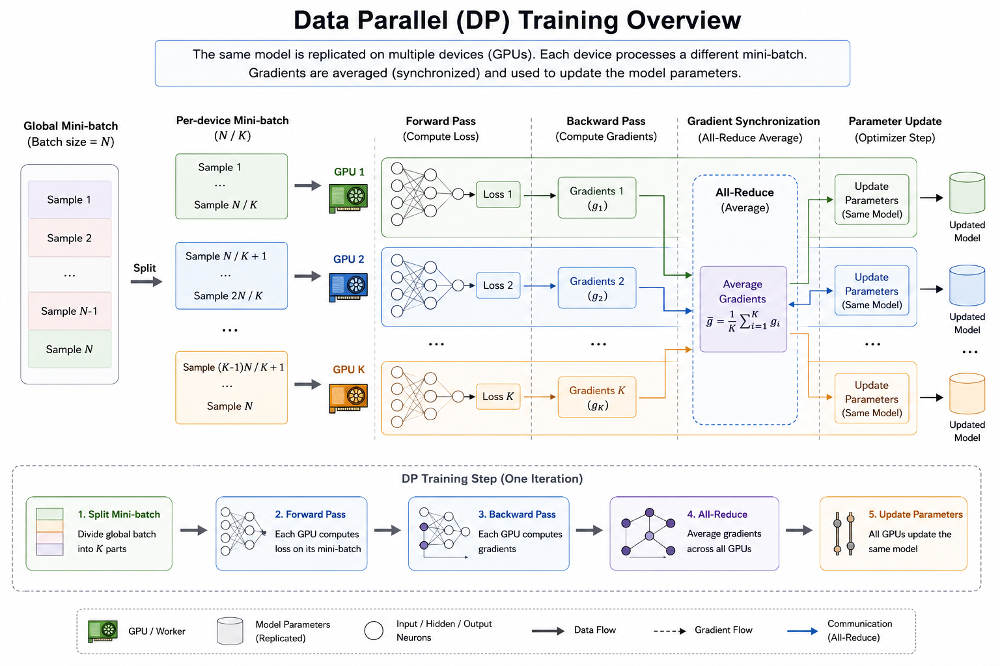
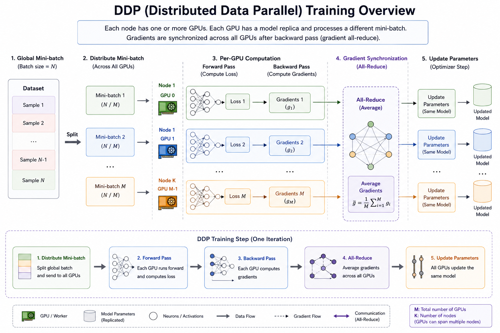
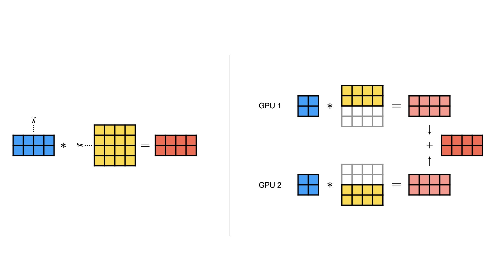
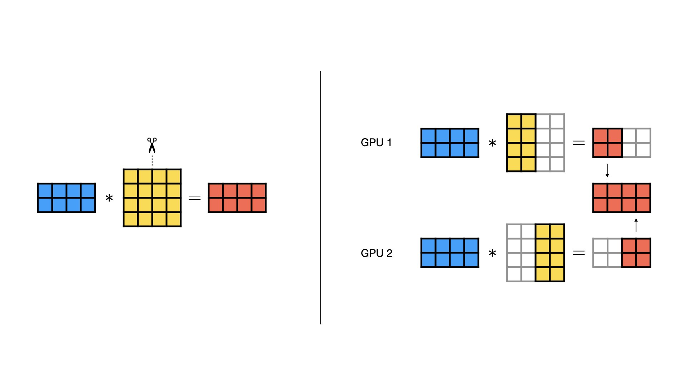
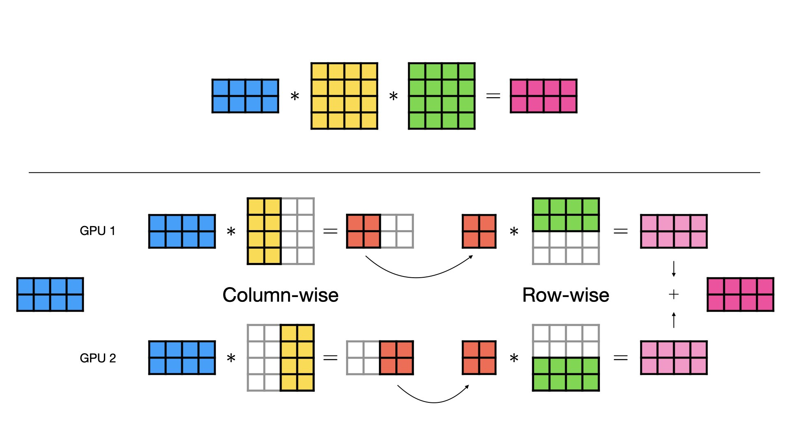
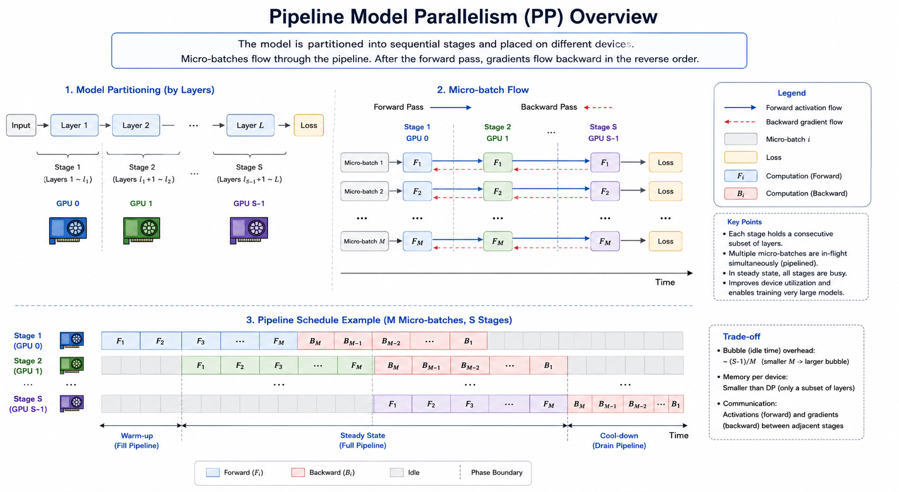
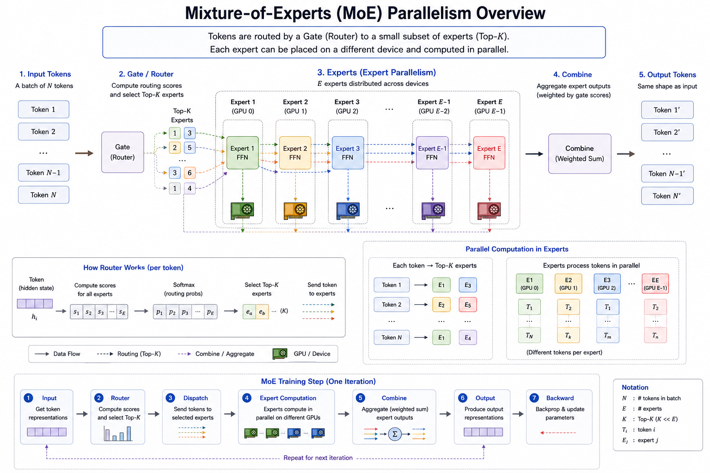
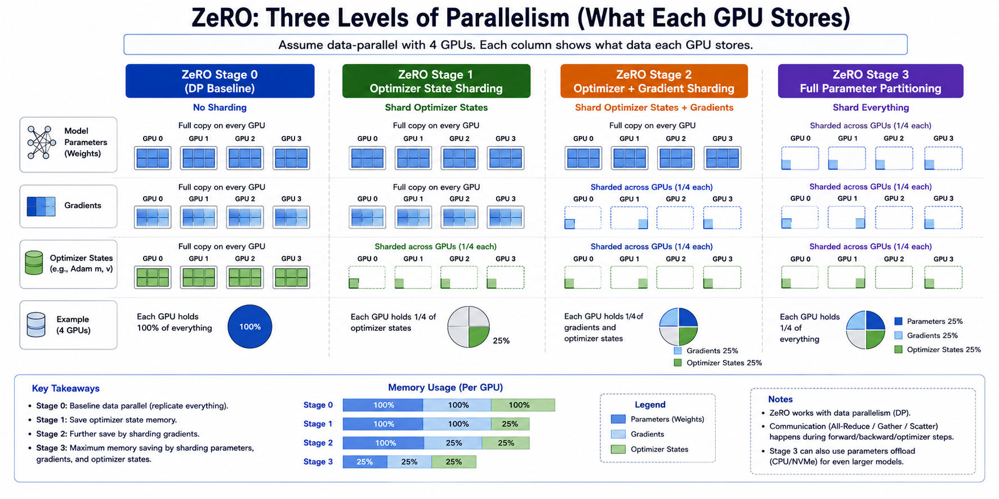

并行计算¶
并行计算主要讨论三个部分。
1. 具体的并行算法：数据并行，模型并行(张量并行，流水线并行)，专家并行等。
2. 通信算法：并行的时候是需要信息交互的，信息如何高效交互由通信算法负责。
3. 计算框架：在工程上结合以上两者的实现。具体有pytorch的FSDP(DP, DDP), DeepSpeed(Zero Redundancy Optimizer), Megatron(Tensor Parallel)等，实际上现在的框架在不断融合不同的并行方案，上面括号中的含义是每个框架的最具代表性的并行算法，而非唯一支持的并行算法。
数据并行¶
数据并行的想法是每个GPU都维护模型的全量参数。然后每个GPU上计算不同的数据，例如每个GPU计算batch为10的数据，单机8卡相当于batch为80。数据并行的典型代表是DP和DDP。这里对两种范式做简单的介绍，在下一节讲通信算法的时候再回顾DP和DDP分别常用的通信算法。
DP¶
DP(Data Parallel)是最简单最直观的数据并行策略，计算过程如图。但是这种并行需要解决两个问题：梯度的同步，参数的同步。这两个问题其实是耦合的，也是在通信算法部分来详解为什么耦合。现在继续拆解DP的做法： 1. 每个 iteration，主 GPU（通常是 GPU 0）把模型参数广播（broadcast）到其他所有 GPU 2. 把一个 batch 的数据切分（scatter）到各个 GPU 3. 各 GPU 并行做前向传播 4. 所有 GPU 的输出被收集（gather）到主 GPU 上计算 loss 5. loss 再 scatter 回各 GPU 做反向传播，计算梯度 6. 各 GPU 的梯度被 reduce（求和/平均）到主 GPU 7. 主 GPU 用聚合后的梯度更新参数，再广播新参数 分析下存在的问题： 1. 主GPU的计算量相对于worker太大了，并且在主GPU计算反向传播的时候，worker是空闲的。 2. 由于是master-worker的结构，通信也会是瓶颈，因为master要发送N份权重。 3. DP其实是个单进程多线程的方案，而Python的GIL是加在进程上的，效率受限。

DDP¶
DDP(Distributed Data Parallel)是对DP方案的一种改进，计算过程如图。

1. 训练开始时，模型参数通过一次性广播同步到所有进程（之后不再需要每轮广播完整参数） 2. 数据通过 DistributedSampler 在各进程间分片，每个进程只处理自己的那部分数据，没有 scatter/gather 的开销 3. 各进程独立做前向和反向传播，互不干扰 4. 反向传播过程中，梯度通过 Ring All-Reduce 算法在所有进程间直接同步（梯度计算出来一部分就开始通信，和反向传播过程重叠（overlap）进行，而不是等所有梯度算完再通信） 5. 每个进程用同步后的梯度独立更新自己的模型参数（由于梯度一致、初始参数一致，更新后各进程模型保持一致，无需再广播参数）
模型并行¶
张量并行¶
张量并行（tensor parallel）是对模型的参数进行切分。分为按行切分（Row-wise Parallel）和按列切分（Column-wise Parallel）,这个名称也经常在并行框架里见到，例如megetron中的TP并行 由于现在主流架构transformer主要以矩阵乘法为主，所以TP的说明也以矩阵乘为主。下图中的蓝色表示输入数据，黄色表示模型参数的矩阵，红色表示矩阵乘的结果。 1. 参数按列切分

矩阵乘法是左矩阵的每行乘右矩阵的每列再求和，得到输出矩阵的一个元素。对参数矩阵的按列切分处理得到的子矩阵相对于未切分的原始矩阵，列是完整的，因此无需切分输入矩阵。但是切分后的矩阵计算完成后是只有结果矩阵的部分列，因此是需要按列拼接结果矩阵得到与不切分等价的结果。
2. 参数按行切分

按行切分后，参数矩阵的列就变得不完整了，因此无法直接与输入矩阵的完整的行相乘，因此需要对输入矩阵进行按列切分，这种切分方式后的计算得到的结果矩阵的维度与不切分是相同的，但是数值不同。切分后计算得到的结果矩阵需要相加才能得到完整的与未切分等价的结果矩阵。
工程上的一种优化
按列切分参数的方案得到的结果矩阵需要按列拼接，按行切分参数的输入矩阵需要按列切分，这两步正好互补，省略掉拼接过程，在按列切分参数的计算后结一个按行切分参数的计算，因为这种并行一般都是发生在不同的GPU上的，省略合并和切分就意味着少了两次GPU通信。

流水线并行¶
流水线并行指的是将模型的不同module放在不同的GPU上，如图所示，主要优化方式是消除计算bubble，但是因为没有仔细研究过消除bubble的优化细节，这里不做介绍。

MOE(专家)并行¶
现在的MOE结构的模型越来越多，而常见的MOE结构的expert实际上就是一个FFN的module，有参数规模一致，计算量基本一致的特征，非常适合将不同的expert放置在不同的GPU上。并行方案如图所示。

ZeRO(Zero Redundancy Optimizer)¶
ZeRO算是比较系统分析并行化的显存占用和分级策略的方案。
首先梳理下在训练模型过程中的显存占用情况。为了通用，假设用Adam等有一二阶动量的优化器（这种优化器相对于SGD有额外的存储需求），训练过程中持续需要的存储空间分为一下几种：模型参数，模型参数对应的梯度，优化器状态。（不包含buffer，但是buffer也占空间）。
这里着重解释下优化器状态：优化器状态就是Adam等稍微复杂的优化器在训练过程种存储的辅助变量，例如一二阶动量，但是不包含梯度。ZeRO把并行方案分为三级，

接下来我们计算每张卡上在不同的ZeRO配置下的通信量，先约定参数总量为\(\Psi\)，并行数量为\(N\)。在计算通信量时，因为通信是成对的，所以只计算发送或接受，算一个即可。 解释下为什么算每张卡：因为在类似于DDP的分布式结构下，每张卡做的事情基本都是相同的，不存在一个master进程要做非常多额外的计算，也会在介绍通信的Ring-AllReduce算法种看到计算和通信的确是基本在GPU间均分的。所以想要知道计算合和通信效率，看单卡即可，这也是Ring-AllReduce算法的创新之处：让通信开销和规模几乎无关。
1. ZeRO-1
前向：每张卡保留有完整的参数，无需通信，即可完成前向计算。
反向：因为梯度要跨卡做平均，所以把所有的梯度发出去。接受自己负责维护的\(\frac{1}{N}\)的优化器状态对应的参数的梯度。完成对应的\(\frac{1}{N}\)的参数更新。
参数同步：参数更新后把自己的\(\frac{1}{N}\)份维护的参数发送出去，接受\(\frac{N-1}{N}\)的参数。
通信总量是\(\(\frac{2(N-1)}{N}\Psi \approx 2\Psi\)\)
-
ZeRO-2
ZeRO-2与ZeRO-1的前向，反向，参数同步基本都相同。唯一的区别是反向的时候无需维护所有的梯度，只需要维护自己负责的\(\frac{1}{N}\)，计算完成后把对应的不负责维护的梯度直接释放掉。通信总量也与ZeRO-1相同。 -
ZeRO-3 前向：ZeRO-3对参数做了切分，但是和TP是不同的，ZeRO-3在算前向的时候实际上是在单卡上要有完成的一层的参数，所以会触发通信。通信量为\(\frac{N-1}{N}\)。
后向：在计算单卡上的梯度的时候，又需要完整的一层的参数，所以参数会和前向一样再被聚合到一起，再次触发\(\frac{N-1}{N}\)的通信。其次，在计算完特定GPU的梯度后，各个GPU上的梯度需要再平均一次，又触发\(\frac{N-1}{N}\)的通信。
参数同步：因为ZeRO-3每个GPU只维护\(\frac{1}{N}\)的参数，无需同步参数。（实际上是通过前向的聚合和反向的聚合实现同步的效果的，因为目标都是在计算的时候参数是一致的）
综上，ZeRO-3的通信量是\(\(\frac{3(N-1)}{N}\Psi \approx 3\Psi\)\)